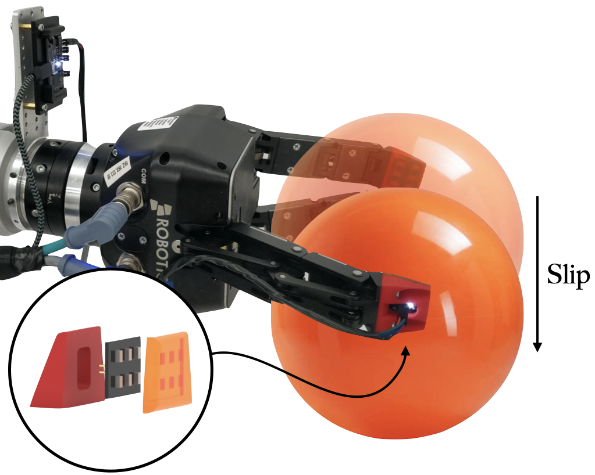
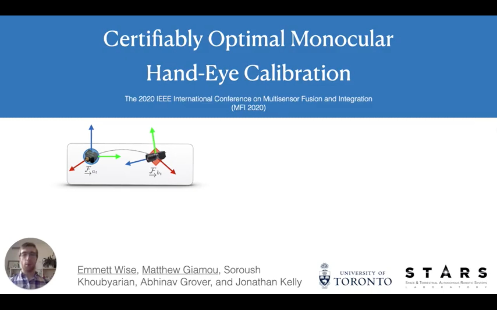
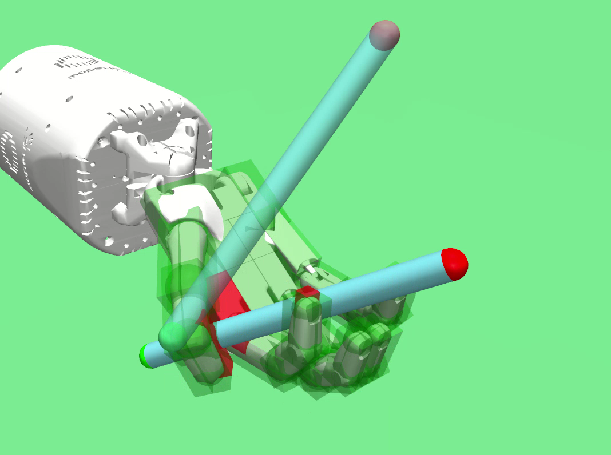
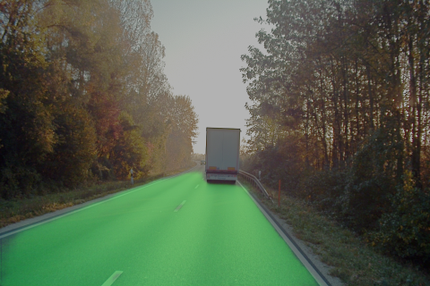

Software Engineer — Robotics & AI
I build state-of-the-art simulation and 3D reconstruction tools for autonomous vehicle applications at Applied Intuition. Previously, I was a Machine Learning Engineer at Kindred AI (Ocado), developing the world’s first fully autonomous grocery fulfillment robotic system.
I hold a MASc in Robotics and AI from the University of Toronto, where I was advised by Dr. Jonathan Kelly, and a BASc in Mechatronics Engineering with an AI option from the University of Waterloo. I am a recipient of the NSERC Canadian Graduate Scholarship and the Vector Scholarship in AI.
University of Toronto · Aerospace Department
2019 – 2021
STARS Lab, supervised by Dr. Jonathan Kelly. NSERC CGS and Vector Scholarship recipient.
University of Waterloo · AI Option
2014 – 2019
Research assistant for Dr. Krzysztof Czarnecki, Dr. Mihaela Vlasea, and Dr. James Tung. 2+ years co-op experience.
Applied Intuition · Sunnyvale, CA
Building state-of-the-art simulation and 3D reconstruction tools for autonomous vehicle applications.
Kindred AI / Ocado Engineering · San Francisco, CA
Developed the world’s first fully autonomous grocery fulfillment robotic system, combining perception, planning, and manipulation at scale.
University of Toronto Robotics Institute — STARS Lab · Toronto, Canada
Researched learning-based tactile slip detection using barometric sensors. Published at ICRA 2022. Awarded NSERC CGS and Vector Scholarship in AI.
NVIDIA Inc. · Holmdel, NJ
NVIDIA Inc. · Seattle, WA
Intellijoint Surgical · Waterloo, Canada

IEEE International Conference on Robotics and Automation (ICRA) 2022
A learning-based method to detect object slip using barometric tactile sensors, achieving >91% accuracy and demonstrating successful generalization across real-world manipulation tasks.

IEEE International Conference on Multisensor Fusion and Integration (MFI) 2020
A convex optimization approach for hand-eye calibration extended to the monocular (unknown-scale) case, providing certifiably globally optimal solutions with provable noise bounds.


Feel free to reach out for research collaborations, job opportunities, or just to say hello.